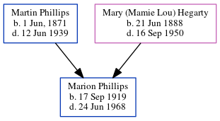

Marion Eugene Phillips 1919 - 1968
[ Home ] | [ Calendar ] | [ Surnames Index ] | [ Census Index ] | [ Family History ]The youngest of 6 children of Martin Phillips and Mary (Mamie Lou) Hegarty, Marion Phillips, the great-uncle of Michele Copp (née Phillips), was born in Atlanta, De Kalb, Georgia, USA on Sep 17, 19191,2,3,4,5.
During his life, he was living in Atlanta Ward 3, Fulton, Georgia in 19201; in Atlanta, Fulton, Georgia in 19302 and in 19353; and in Atlanta, Fulton, Georgia, USA on Apr 1, 19403.
He died on Jun 24, 1968 in , Dade, Florida, USA4,6.
Parents
- Martin Eugene was born on Jun 1, 1871
- Mary (Mamie Lou) was born on Jun 21, 1888
Citations
- 1920 United States Federal Census Online publication - Provo, UT, USA: MyFamily.com, Inc., 2005. For details on the contents of the film numbers, visit the following NARA web page: NARA. Note: Enumeration Districts 819-839 on roll 323 (Chicago City.Original data - United States of America
- 1930 United States Federal Census Online publication - Provo, UT, USA: MyFamily.com, Inc., 2002.Original data - United States of America, Bureau of the Census. Fifteenth Census of the United States, 1930. Washington, D.C.: National Archives and Records Administration, 1930. T626, 2,667 rol
- 1940 United States Federal Census Ancestry.com Operations, Inc. (Age: 20; Marital Status: Single; Relation to Head of House: Son)
- OneWorldTree Online publication - Provo, UT, USA: MyFamily.com, Inc.
- U.S., World War II Draft Cards Young Men, 1940-1947 Ancestry.com Operations, Inc. ( View Sources.)
- Florida Death Index, 1877-1998 Online publication - Provo, UT, USA: The Generations Network, Inc., 2004.Original data - State of Florida. Florida Death Index, 1877-1998. Florida: Florida Department of Health, Office of Vital Records, 1998.Original data: State of Florida. Florida Death I
Family Tree
Generated by ged2site. Last updated on Jun 6, 2024